Guía Rápida CHC CTS-112R4
Esta guía contiene instrucciones importantes para la configuración y operación de la Estación Total CHC CTS-112R4. Incluye normas de seguridad, procedimientos de medición y gestión de datos.
- Medición de ángulos horizontales y verticales
- Medición de distancias
- Grabación de medidas
- Visualización del eje de dirección y verticales
Adecuado para uso en ambientes apropiados para la habitación humana permanente. No es adecuado para uso en ambientes agresivos o extremos.
1. Información Importante sobre Instrumentos
Este manual contiene normas de seguridad importantes. Lea atentamente antes de usar el equipo.
Productos Láser
Los instrumentos contienen los siguientes productos láser:
| Producto Láser | Clase de Láser |
|---|---|
| Módulo de medición electrónica de distancias (EDM) - mediciones con prisma | Clase 1 |
| Módulo EDM - mediciones sin reflector | Clase 3R |
| Plomada láser | Clase 2 |
Desde una perspectiva de seguridad, los productos láser de clase 3R deben tomar precauciones:
- Evitar la exposición directa del ojo a la viga
- No dirigir el rayo a terceros
Los productos láser de clase 2 no son intrínsecamente seguros para los ojos:
- Evitar mirar directamente al rayo
- Evitar dirigir el rayo a otras personas
2. Configuración de Estación Total
Configuración del instrumento utilizando la plomada láser sobre una marca en el terreno.
Siempre es posible estacionar el instrumento sin la necesidad de un punto marcado en el suelo.
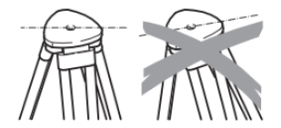
Procedimiento de Configuración
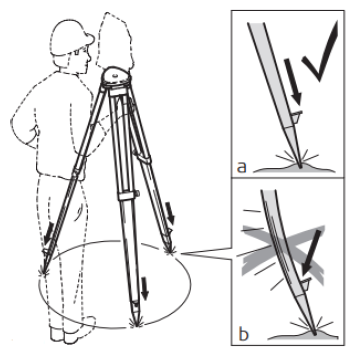
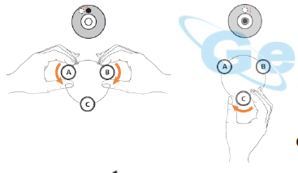
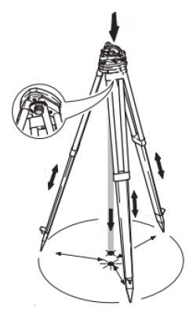
- Extender las patas del trípode a la medida necesaria y apretar los tornillos. Coloque el trípode de manera que la placa sea lo más horizontal posible y las patas sean firmes en el suelo.
- Para garantizar estabilidad, presionar las patas en el suelo. La fuerza debe aplicarse a lo largo de las patas.
- Proteger el instrumento de la luz solar directa y evitar cambios bruscos de temperatura.
- Retire el instrumento del contenedor. Centre la estación total en el trípode y fíjelo con el tornillo de fijación.
- Nivelar aproximadamente con la burbuja de ojo de buey. Girar dos tornillos de pie juntos en direcciones opuestas. El dedo índice indica la dirección en que la burbuja debe moverse. Use el tercer tornillo para centrar la burbuja.
- Girar la plomada láser del instrumento. Encender la estación total y hacer clic en el botón de estrella ★ para hacer centrado y nivelación. La plomada láser se encenderá automáticamente. Use el botón de dirección para ajustar el brillo.
- Mover las patas del trípode y usar los tornillos de pie nivelante para centrar la plomada sobre el punto del suelo.
- Ajustar las patas del trípode para nivelar el nivel esférico.
- Usando la burbuja de ojo de buey, girar los tornillos de pie base nivelante para nivelar con precisión el instrumento.
- Ligeramente aflojar el tornillo de fijación central, mantener la base con ambas manos, y mover el instrumento para que el láser esté alineado con precisión sobre el punto.
- Repetir los pasos 9 y 10 hasta obtener la precisión requerida.
3. Descripción del Instrumento
Componentes del Equipo - Cara I
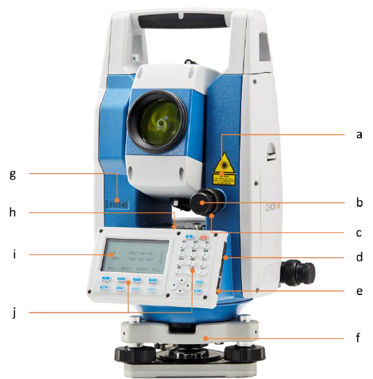
Componentes del Equipo - Cara II
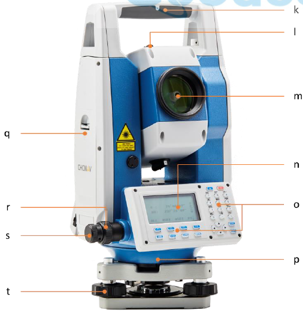
4. Interfaz de Usuario
Descripción del Teclado
Al encender la estación total, se mostrará la pantalla en modo de medición de ángulos (menú de tres líneas).
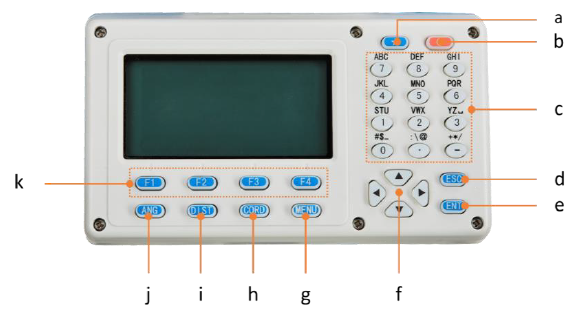
| Tecla | Descripción |
|---|---|
| ★ | Botón de función estrellas: Elegir tipo de reflector, intensidad de plomada, iluminación de cruz y pantalla |
| ⏻ | Encendido/Apagado: Cambia el instrumento encendido o apagado |
| ANG | Medición de ángulos: Modo funcional de medición de ángulos |
| DIST | Medición de distancia: Modo funcional de medición de distancia |
| CORD | Medición de coordenadas: Modo de funcionamiento de coordenadas |
| MENU | Menú: Administrar puntos conocidos, replanteo, almacenamiento, versión y configuración |
| ESC | Escape: Salida de la interfaz actual |
| ENT | Enter: Confirma entrada y continúa al siguiente campo |
| F1-F4 | Funciones variables: Asignadas a funciones mostradas en la parte inferior de la pantalla |
| Alfanumérico | Entrada de texto y valores numéricos |
Centrado y Nivelación, Ajustes de Mediciones
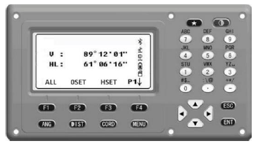
- Encienda la estación total y haga clic en el botón de estrella ★ para ir al menú de centrado y nivelación. La plomada láser se encenderá automáticamente.
- Use el botón de dirección para elegir el tipo de reflector o ajustar el brillo de la luz láser, brillo y contraste de pantalla.
- Presione F3 para dejar la plomada láser encendida permanentemente.
- Presione F4 para ajustar temperatura, presión, prisma y PPM (generalmente establecido por defecto).
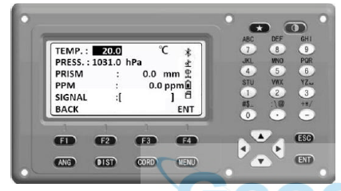
5. Mediciones
5.1 Medición de Ángulos
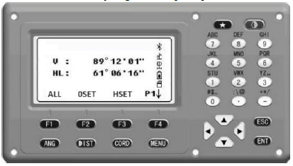
- Encienda la estación total y haga clic en ANG.
- Haga clic en F4 dos veces y luego en F3 (FILE) para crear un nuevo archivo.
- Ingrese el nombre del archivo y confirme.
- Apunte al objetivo y bloquee los tornillos de sujeción vertical y horizontal.
- Haga clic en OSET F2 para ajustar el ángulo Hz a 0.
- Haga clic en SI F4 para confirmar.
- Apunte al siguiente objetivo.
- Haga clic en REC? F1 para registrar el ángulo.
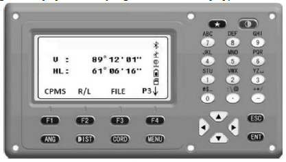
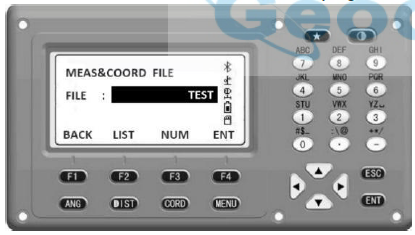
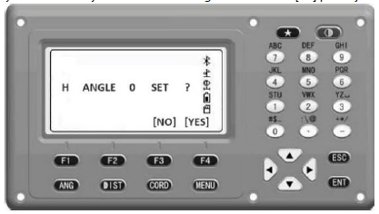
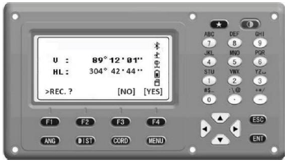
5.2 Medida de Distancia
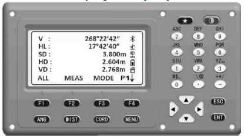
- Encienda la estación total y haga clic en DIST.
- Para crear un nuevo archivo, consulte el procedimiento anterior; de lo contrario, los datos se almacenarán en el último proyecto.
- Apunte al objetivo y haga clic en MEAS F2 para medir la distancia.
- Haga clic en REC? F1 para grabar los datos. Seleccione SI F4 para confirmar.
- Puede pulsar MODE F3 y seleccionar el modo de encuesta diferente. Hay 4 opciones:
- Medir el tiempo 1
- Medida 3 veces
- Encuesta repetida
- Tracking
- Haga clic en F4 para usar la función de replanteo, distancia de desplazamiento y distancia.
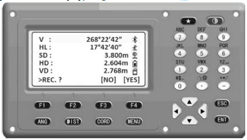
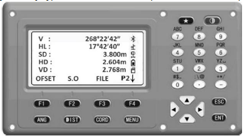
5.3 Medición de Coordenadas
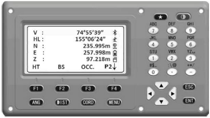
- Haga clic en CORD y pulse F4 para ir a la página 2. Para restablecer el punto de vista vaya a BS F2. HT F1 para ajustar altura.
- Primero debe ingresar el punto de estación de la estación total. El punto puede ser de la lista (haga clic en LIST F2) o introducir coordenadas manualmente.
- Mida e ingrese la altura de la estación total. Pulse ENT F4 para confirmar.
- La página siguiente le recordará que debe establecer el punto de retrovisión (BS). Confirme.
- Apunte al blanco y bloquee los tornillos. Ingrese las coordenadas BS y haga clic en ENT F4.
- Una retrovisión aparecerá. Haga clic en SI para confirmar o vuelva a medir.
- Ingrese la altura del objetivo y pulse ENT.
- Apunte al objetivo con el telescopio, haga clic en F4.
- Compruebe el error de coordenadas del punto de retrovisión. Haga clic en F4 para medir las coordenadas.
- Vuelva a la Página 1 y haga clic en MEAS F2 para medir las coordenadas del punto. Haga clic en ALL F1 para grabar este punto.
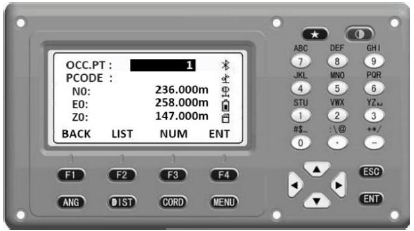
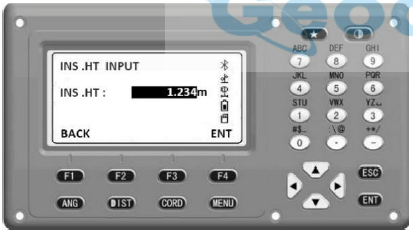
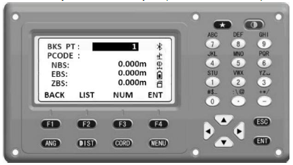
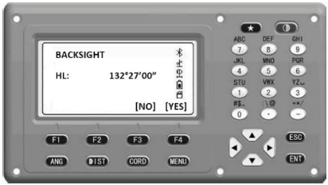
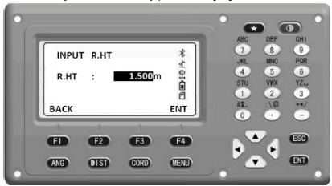
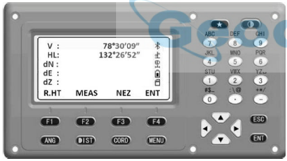
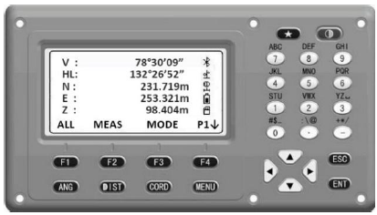
6. Estaca (Layout)
6.1 Medida de Distancia
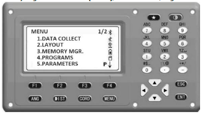
- Encienda y haga clic en el botón MENU, luego haga clic en el teclado 2 para seleccionar la función de replanteo (LAYOUT).
- Cargue un archivo de coordenadas, haga clic en IMP. F2 para elegir un archivo existente en la lista.
- También puede importar puntos de la tarjeta SD. Haga clic en IMP. F2 para importar puntos de otro archivo seleccionado.
- La estación total mostrará las opciones de Layout:
- OCC.PT INPUT: Insertar coordenadas de estación total
- BACKSIGHT: Determinar la dirección
- LAYOUT PT: Replanteo de puntos
- SIDE SHOT: Medir un punto de tiro
- Presione 1 para elegir coordenadas de punto de ocupación. Entrada conocida de punto de coordenadas o elija el punto de la lista.
- Retrovisión: Entrada de coordenadas o selección de lista.
- Haga clic en 3 para replantear puntos conocidos. Hay dos opciones: entrada manual o selección de lista.
- Ingrese la altura del prisma y haga clic en ENT.
- La interfaz mostrará el resultado calculado del replanteo. Elija DIST F1 o NEZ F2 para cambiar entre interfaces.
- MEAS F1 para medir y obtener la distancia entre el punto replanteado y el objetivo.
- Haga clic en GUIDE F3 para entrar en el modo de guía de replanteo. Gire la estación total para apuntar al blanco, MEAS F1 para medir. Finalmente encontrará el punto de diseño.
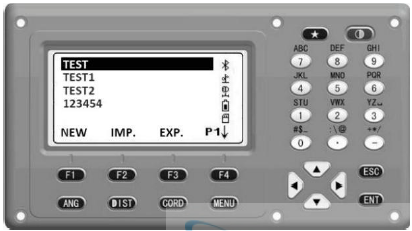
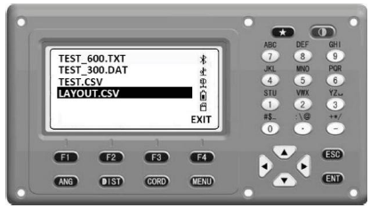
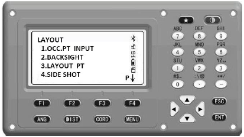
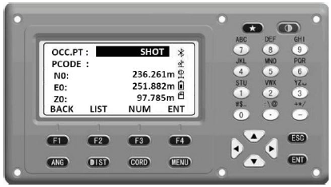
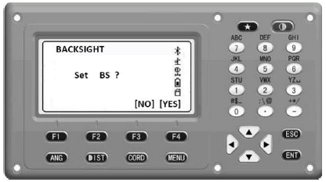
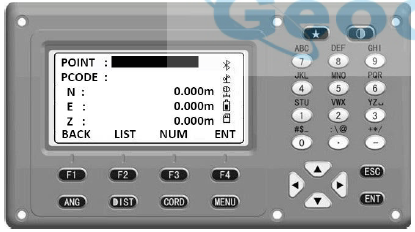
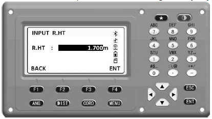
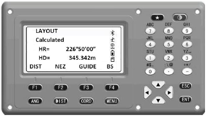
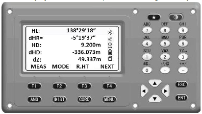
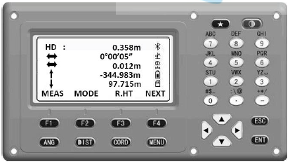
6.2 Tiro Lateral (Side Shot)
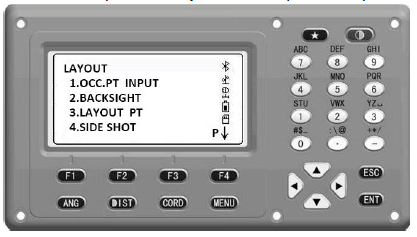
- El tiro lateral se utiliza para estudiar y establecer un punto como punto de referencia.
- Seleccione 4.SIDE SHOT en el menú LAYOUT.
- Haga clic en MEAS F4 para medir el punto y grabarlo.
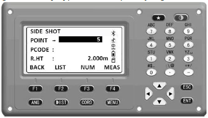
7. Gestión de Datos
7.1 Importación y Exportación de Datos
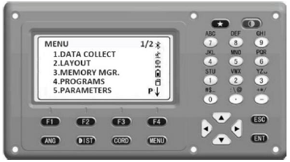
- Encienda y haga clic en MENU, luego haga clic en 3 para elegir MEMORY MGR (Gestión de Memoria).
- Acceda a la función de gestión de archivos.
- Haga clic en 1 para seleccionar un archivo existente o crear uno nuevo. Haga clic en NEW F1 para crear nuevo archivo.
- Haga clic en IMP. F2 para elegir el archivo a importar. El CTS-112R4 admite archivos
.TXT,.CSVy.DAT. - Haga clic en EXP. F3 para exportar datos. Se crearán automáticamente cuatro archivos en la tarjeta SD:
Name_600.TXTName_300.1X1Name.DA1Name.CSV
- Elija F4 para ver atributos de archivo, cambiar nombre o borrar archivos.
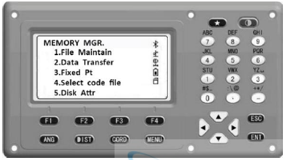
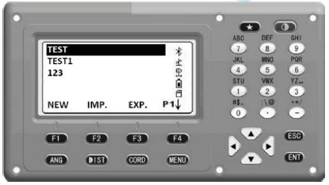
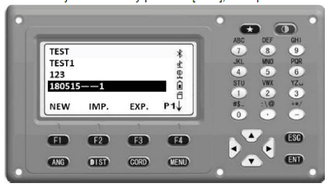
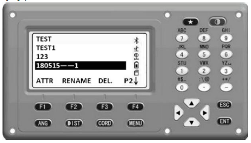
7.2 Importación y Exportación de Datos a PC
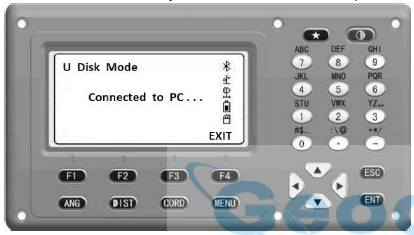
- Conecte la PC a través del puerto mini-USB usando un cable mini-USB (incluido en el contenedor).
- Haga clic en el botón del teclado 5 para conectar la estación total a la PC.
- La estación total puede ser vista como lector de tarjetas (U Disk Mode).
- El CTS-112R4 soporta importación y exportación de datos a PC.
8. Cuidado y Transporte
8.1 Transporte
Transporte en el Campo
- Llevar el instrumento en su maletín original
- O llevar el trípode con las patas abiertas encima del hombro, con el instrumento colocado en posición vertical
Transporte en Vehículo
No lleve nunca el instrumento suelto en un vehículo de carretera, ya que puede resultar dañado por golpes y vibraciones. Siempre transporte el instrumento en su maletín y bien asegurado.
Envío
Al transportar el producto en tren, mar o aire, siempre utilice el embalaje original completo de CHC, contenedor de transporte y cartón, o su equivalente, para proteger contra golpes y vibraciones.
8.2 Almacenamiento
Respete los límites de temperatura para el almacenamiento del equipo, especialmente en verano si se transporta dentro de un vehículo. Consulte la "Hoja de datos del instrumento CTS-112R4" para obtener información sobre los límites de temperatura.
Para mantener la precisión y durabilidad del instrumento, realice calibraciones periódicas y mantenga el equipo limpio y seco después de cada uso.